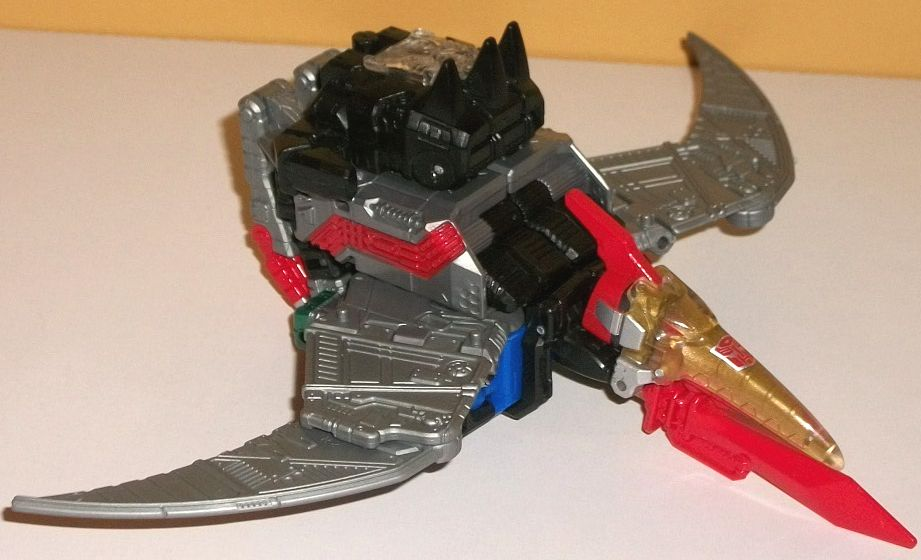
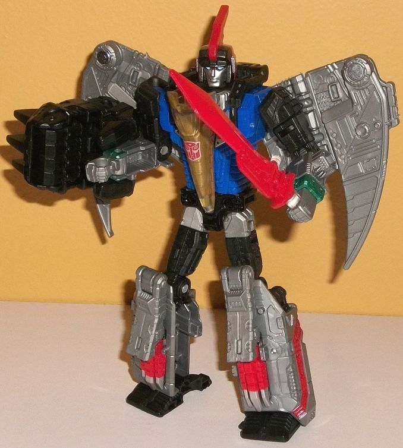
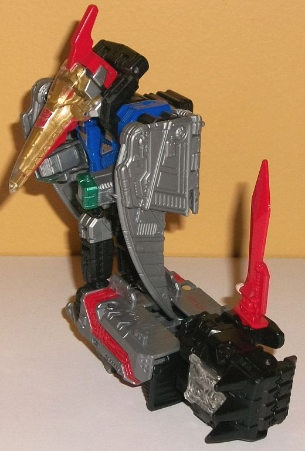
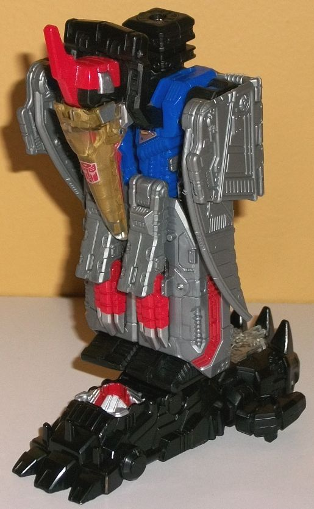

Allegiance
: Autobot
Size
: Deluxe
Difficulty of Transformation to Robot:
Easy
Difficulty of Transformation to Leg
:
Easy
Difficulty of Transformation to Arm
:
Easy
Color Scheme
: Milky gray, black,
blue, red, and some metallic gold, silver, metallic moderately light forest
green, light metallic silvery blue, and clear plastic
Rating:
9.2


Swoop's beast
mode is, of course, a robotic pterodactyl, and it's quite G1-accurate with
some modern enhancements-- though not as many as I'd have thought. Proportionally
the head is great, and although the wings are a bit skinny, wing-span wise
they're probably in the ballpark. The main body, though, is where this
mode is easily the weakest, and that's usually been the case with any Swoop
faithful to the G1 design. Although the fists are tucked in, the arms are
fairly obvious on the sides of the main body (though at least they're mostly
covered up by the wings), and he's got a "jet backpack" as opposed to that
mass going into a proper back end. Instead, he has small feet that-- though
they're proportionally okay-- actually hang down from the TOP of the back
end of the bottom, so even if you extend them to full length they just
BARELY touch the floor, and that's if you angle his feet. It's just kinda
weird how he's basically part pterodactyl, part jet, but has these useless
little feet behind him. Again, this is accurate to the G1 source material,
but I wish they had changed this a bit more. The mold detailing is quite
impressive on the toy and the biggest visual upgrade from his G1 self,
with vents, circuitry, and panels present practically everywhere, ESPECIALLY
on his wings. Like most of the other Dinobots, Swoop's color scheme is
mostly a milky gray-- not quite the light shade that's VERY blah, but it's
still kind of a bland shade, even if it is a bit darker. His pterodactyl
head is mostly made of clear plastic, but then painted on the underside
with some metallic gold paint, which just looks so cool, and I'm glad it
was done to all the PotP Dinobots. There's an Autobot symbol on the middle
of his beak, while the rear section of his head, his eyes, and his bottom
beak are painted red-- along with some circuitry details on the sides of
the back and the lower portions of his pterodactyl feet. To help add in
another shade, black is used for the neck, the portion that becomes his
robot feet, part of his arms/sides of the body, part of the back, and on
his Prime armor piece. (Like other Prime armor pieces, you can take out
the clear plastic piece in the center and put a Prime Master in the spot;
otherwise it serves no function in this mode, and plugs onto the top of
his back. The spikes on the front are pretty cool, though.) For some minor
accent colors, there's some silver on the sides of his pterodactyl head.
His sword weapon can also store underneath his beak-- it looks a bit odd,
but I guess it gives him a way to more easily impale 'bots while flying.
For articulation in this mode, Swoop can open/close his mouth, move his
neck up and down slightly, move his pterodactyl legs at two places (for
all the good that does), and his wings can move out-and-in at the midpoint
and up-and-down near where they meet the body, which is pretty decent for
this kind of alt mode. It should also be noted Swoop has six pegs on the
top of this mode that Prime/Titan Masters can stand on-- two near the base
of each wing, and two on his back.
As with most other Swoop
toys, the transformation is pretty simple-- the back folds out to become
his legs, the arms fold out from the sides, and the pterodactyl head folds
down onto his chest, with the rear portion becoming his robot head with
that characteristic pterodactyl headcrest. Proportionally, this mode is
pretty solid overall, though his arms do seem a bit small, particularly
for a Dinobot. (Of course, if they were bigger they'd be bigger eyesores
in alt mode, so I guess there's that.) The biggest color reveal is the
blue on his chest in this mode, which looks great and helps give him a
bit more contrast, especially when compared to the other Dinobots. The
aforementioned enhanced mold detailing also really helps make this mode
more interesting visually, not just with the wings but all the little bits
of detail on his lower legs, the arms, and the chest. Beyond the pterodactyl
head on his chest, he's got some silver G1-like paint decals on the sides
of his chest, along with a nice shade of metallic forest green on his wrists
that looks so good against the milky gray I wish it was used more, G1-accurate
or not. The pterodactyl feet on his lower legs help keep those pieces visually
interesting, and his headsculpt is solid, complete with minor silver-painted
side vents and a fairly neutral expression on his "normal" face, with triangular,
light metallic silvery blue eyes on a silver-painted face. For articulation
in this mode, Swoop can move at the neck, shoulders (at two points), elbows,
inwards at the wrists, rotation at the waist (if you unplug his pterodactyl
head from his chest slightly), and movement at the hips (at two points),
knees, up-and-down at the ankles, back-and-forth near where the wings meet
his body, and up-and-down at both the base of the wings and about halfway
up each. Thus, he's pretty darned articulated, and pretty well-balanced
as well. Swoop's Prime armor piece can fit either directly into his hands
or on a peg hole on the side of each lower arm piece, but generally it's
kind of a large fist-like shield in this mode, and not really impressive.


Swoop's arm mode is
his robot mode, but with the legs pegged together, his Prime armor plugged
into the bottom of his feet, his arms and wings folded up to connect to
his main body, and then his pterodactyl head flipped up a bit to merge
with his robot head while his combiner peg comes out of his back. Especially
for a beastformer, this is a pretty solid armor mode. From a usual angle
(i.e., from the side), the pterodactyl head peaks out enough and serves
as a nice "shoulder", while the wings help cover up most of the obvious
robot bits on his main body and generally make the shoulder look more solid
(though I do wish the arms completely folded up, instead of the lower arms
poking out just a bit in front of the wings). The legs forming the lower
arm is pretty typical, and generally it looks pretty solid, though the
rectangular "hole" in the lower portion of the lower arm is a minor eyesore.
For articulation in this mode, he can move at the shoulder (at two points),
at the elbow (at three or four points, depending upon how you bend the
arm), at the wrist, at the base of each thumb, and at the base of the four
fingers on his hand (all as one piece; they don't move individually).
Although most combiner
leg modes are more similar to the alt mode than the robot mode, not so
with Swoop. In fact, Swoop's leg mode is basically his arm mode more compact,
with the legs folded up being the main difference. The robot arms are also
oriented in a position straight against the body like in beast mode, so
they don't stick out from a silhouette perspective at all. The pterodactyl
head also sticks down now, with the combiner peg sticking up behind the
head, while the Prime armor piece combines with a leg piece from PotP Grimlock
to form the combiner foot that pegs under the bottom of Swoop's feet. This
is a remarkably solid leg mode, to the point where it's hard to find anything
"wrong" about it at all. The pterodactyl head again forms a "cap" to help
hide the combiner port a bit-- in this case, a kneecap-- and the rest of
the toy is just pegged in very securely, nothing moves inadvertently. If
I REALLY wanted to get picky I guess I could say it's a bit too boxy, but
that's really looking for something. As with most leg modes, there's two
points of articulation at the knee/combiner peg, and rotation at the ankle
because of how the foot plugs in as well as an ankle tilt, but other than
that there isn't any articulation in this mode.
PotP Swoop is remarkably accurate to his G1 design while also A. improving upon the proportions in both modes and B. making solid limb modes, as well. I do think his alt mode is still a bit weak because of the "body backpack/tiny legs" issue, but this was an issue with the design in G1 as well. Otherwise, great proportions, great articulation, a solid look if a bit simplistic in his transformation-- the best of the PotP Dinobots, in my opinion. Highly recommended.
Review by Beastbot